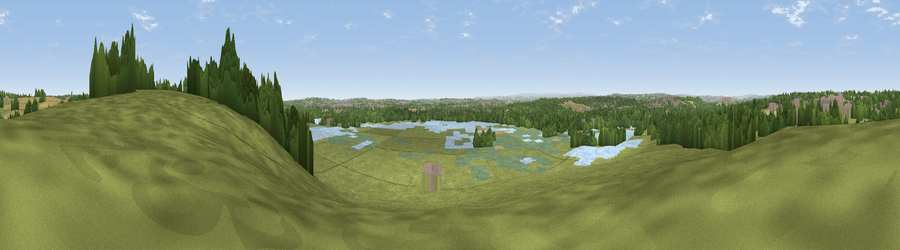

Viewpoint near Great Preston
#20957 in England · top 30% of its area beats it · near Great PrestonThe view, rendered

A 360° render of this exact spot computed from the terrain model, tree cover and land cover — summer colours, afternoon light, calibrated against photographs of famous viewpoints. Real trees, hedges and buildings will differ in detail.
The panorama
Grey silhouette: terrain skyline in each direction (720 bearings, Earth curvature and refraction included). Dashed green: skyline with trees (+15 m) and buildings (+8 m) as obstacles. Blue strip: how far the ground is visible on each bearing.
Where the view opens
Wedge length = distance to the farthest visible ground on that bearing (vegetation-aware). Rings at 10, 25 and 50 km.
What fills the view
55% grassland · 16% woodland · 8% water · 7% cropland · 7% built-up · 7% wetland
Angular shares of the visible panorama (visual magnitude), not map area. Landscape diversity 0.61 (0–1 Shannon).
Key numbers
More beautiful places nearby
The staircase of upgrades: each row has a higher view potential than everything closer. Driving times are estimates from straight-line distance, calibrated against real road routing — check an actual route before setting out.
| Place | Direction | Drive | Score |
|---|---|---|---|
| Roach Hill | NE · 4 km | ~8 min | 55.2 |
| Viewpoint near Kippax | NE · 4 km | ~9 min | 57.9 |
| Viewpoint near Micklefield | ENE · 6 km | ~12 min | 65.7 |
| Viewpoint near Woolley | SSW · 18 km | ~31 min | 66.5 |
| Viewpoint near Woolley | SSW · 18 km | ~32 min | 67.9 |
| Rawdon Trig point | WNW · 20 km | ~34 min | 69.6 |
| Rawdon Billing | WNW · 20 km | ~34 min | 73.0 |
| Viewpoint near Otley | NW · 24 km | ~39 min | 77.5 |
53.75703, -1.40958 · source: screening · position refined by local search. Computed location — check access rights before visiting.